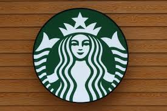

starbucks Corporation is een Amerikaanse multinationale keten van koffiehuizen en koffiebranderijreserves met het hoofdkantoor in Seattle, Washington. Het is 's werelds grootste koffiehuisketen.
prijs $12
1
starbucks Corporation is een Amerikaanse multinationale keten van koffiehuizen en koffiebranderijreserves met het hoofdkantoor in Seattle, Washington. Het is 's werelds grootste koffiehuisketen.
prijs$10
2

starbucks Corporation is een Amerikaanse multinationale keten van koffiehuizen en koffiebranderijreserves met het hoofdkantoor in Seattle, Washington. Het is 's werelds grootste koffiehuisketen.
prijs$9
3
starbucks Corporation is een Amerikaanse multinationale keten van koffiehuizen en koffiebranderijreserves met het hoofdkantoor in Seattle, Washington. Het is 's werelds grootste koffiehuisketen.
prijs$6
4
starbucks Corporation is een Amerikaanse multinationale keten van koffiehuizen en koffiebranderijreserves met het hoofdkantoor in Seattle, Washington. Het is 's werelds grootste koffiehuisketen.
prijs$5
5
starbucks Corporation is een Amerikaanse multinationale keten van koffiehuizen en koffiebranderijreserves met het hoofdkantoor in Seattle, Washington. Het is 's werelds grootste koffiehuisketen.
prijs$9
6
starbucks Corporation is een Amerikaanse multinationale keten van koffiehuizen en koffiebranderijreserves met het hoofdkantoor in Seattle, Washington. Het is 's werelds grootste koffiehuisketen.
prijs$4
7
starbucks Corporation is een Amerikaanse multinationale keten van koffiehuizen en koffiebranderijreserves met het hoofdkantoor in Seattle, Washington. Het is 's werelds grootste koffiehuisketen.